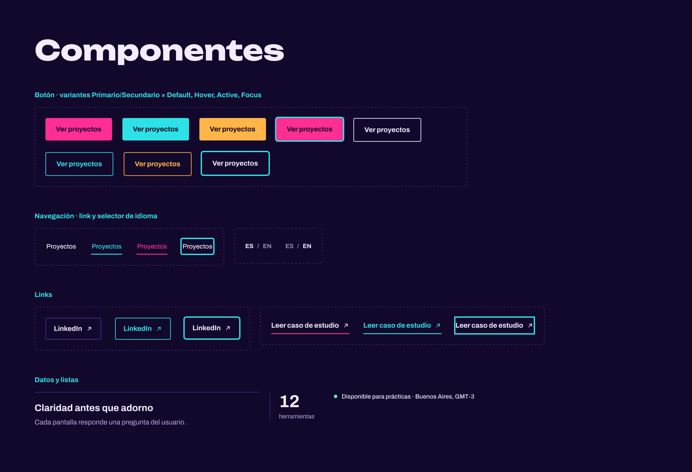
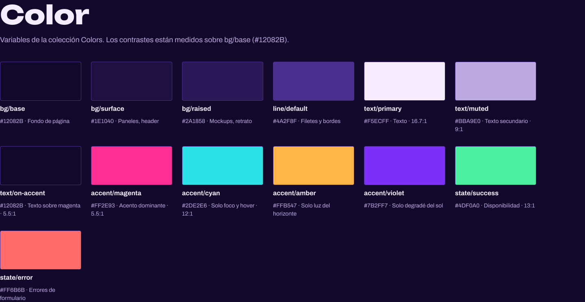
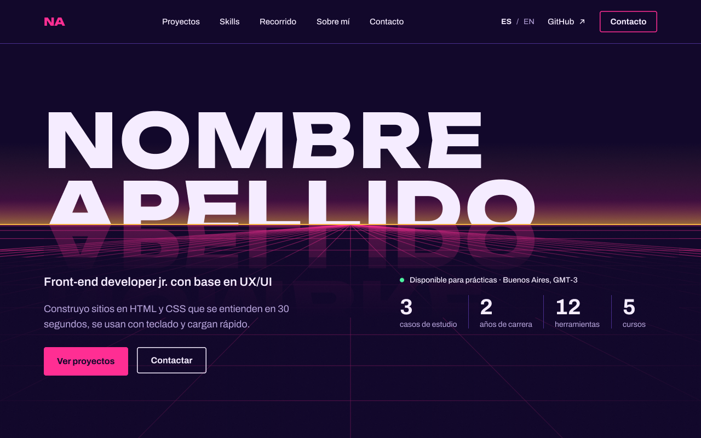
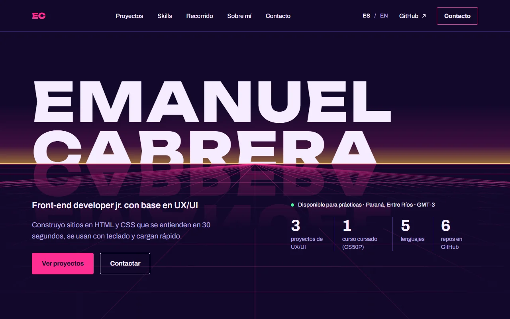
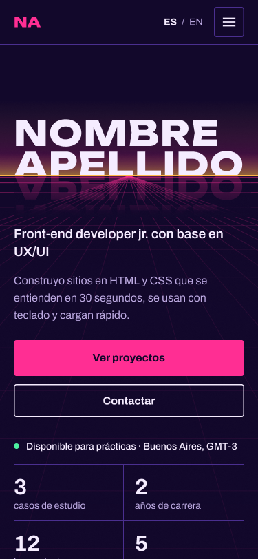
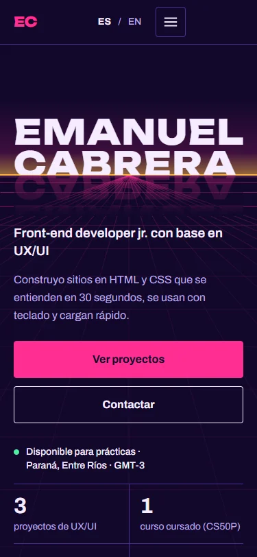

Diseño UX-UI 2026 · Trabajo final · Lic. en Sistemas de Información, FCyT
Emanuel Cabrera · Front-end developer jr. con base en UX/UI
Docente: Mg. Ernesto Ledesma
Sitio: emacabrera97.github.io/TP-Final-UXUI-Portfolio · Código: github.com/emacabrera97/TP-Final-UXUI-Portfolio
1 · Usuario objetivo
Apunto a empresas e instituciones que ofrecen una primera experiencia en desarrollo: pasantías y puestos junior.
Laura, 34 · Recruiter IT en una empresa regional de software.
Laura tiene 20 candidatos para una pasantía y abre cada portfolio unos segundos, probablemente desde el celular entre reuniones. Quiere saber quién es, qué sabe hacer y cómo escribirle.
2 · Benchmark
Seleccionados de la lista developer-portfolios. Análisis hecho sobre el texto de cada página.
Limitación: la lectura fue del contenido de texto, no del diseño visual.
2 · Benchmark
Los tres tienen el mismo punto ciego: no dicen cuándo ni para qué están disponibles. Es lo que más busca Laura.
| Problema observado | Decisión en mi portfolio | Dónde se ve |
|---|---|---|
| Hero abstracto o con dos identidades | Un solo rol, una frase concreta: “Front-end developer jr. con base en UX/UI” | Hero |
| Sin disponibilidad | Badge “Disponible para prácticas” con ubicación y GMT | Hero |
| CTAs pensados para clientes | “Ver proyectos” y “Contactar” | Hero y header |
| Proyectos sin resultado ni rol | Cada tarjeta lleva resultado o aprendizaje, año y herramientas | Proyectos |
| Contacto escondido o solo con íconos | Email grande con mailto: y redes con texto | Contacto |
| Muchos links de menú o CV repetidos | 5 anclas y un solo CTA de contacto | Header |
Adopto: el menú corto de Adham y la lógica de caso de estudio de Mădălina.
3 · Concepto visual
Una escena synthwave donde el nombre queda cortado por la línea del horizonte y se refleja sobre una grilla en perspectiva.
Se siente como una pantalla de noche, concentrada.
Fondo índigo #12082B y capas más claras para paneles.
Ordenado, medido, sin adorno gratuito.
Grilla y filetes de 1 px, radio de 4 px, espaciado en múltiplos de 4 y 8. Unbounded para títulos, Archivo para texto.
Cercano, que invita a escribir.
Ámbar solo para la luz del horizonte; texto en primera persona y directo.
Imágenes: ilustraciones propias (horizonte, sol, grilla) y mockups marcados como ilustrativos, sin fotos de stock.
4 · Arquitectura de información
Un one-page con anclas y una página interna de caso de estudio.
Agrupé las tarjetas de contenido por la pregunta que responde cada una:
Orden elegido: proyectos antes que skills, porque la prueba de trabajo pesa más que la lista de herramientas.
5 · Design system


6 · Prototipo y sitio
Mismo primer pantallazo en desktop (1280) y mobile (375): en cada par, a la izquierda el prototipo y a la derecha el sitio publicado.
Figma · desktop

Sitio · desktop

Figma · mobile

Sitio · mobile

aria-expanded y foco cian.7 · Validación
Se mide: si lo logra, cuánto tarda y dónde duda.
| Tarea | Persona 1 | Persona 2 | Persona 3 |
|---|---|---|---|
| 1 · Email | … | … | … |
| 2 · Proyecto | … | … | … |
| 3 · Herramientas | … | … | … |
| 4 · Disponibilidad | … | … | … |
| Hallazgo | Cambio aplicado |
|---|---|
| … | … |
| … | … |
8 · Resultados
Lighthouse mobile sobre la URL pública (09/11/2026).
prefers-reduced-motion.